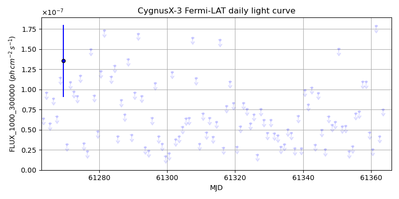
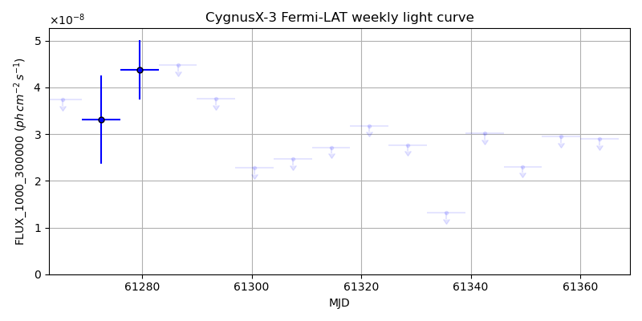

LAT Lightcurve site: https://fermi.gsfc.nasa.gov/ssc/data/access/lat/msl_lc/source/Cygnus_X-3
NED: Query
Time of last update of this page: UT: 2026-11-20 16:27 (MJD: 61364.686)
| Property | Value |
|---|---|
| R.A. | 20:32:25.68 |
| Dec. | 40:57:28.8 |
| z | 0.000 |
| 3FGL SpectrumType | |
| 3FGL PL Index | -1.00 |
| 3FGL Flux_100_300000 | -1.00e+00 |
| 3FGL Flux_1000_300000 | -1.00e+00 |
| 3FGL Flux >200 GeV | -1.00e+00 |
| 3FGL Extrap. Crab >200 GeV | -1.00 |
| 3FGL Flux After EBL Absorption >200GeV | -1.00e+00 |
| 3FGL EBL Crab Fraction >200GeV | -1.00 |
| MJD | dMJD | Flux | dFlux | Frac3FGL | FracCrab>200GeV | EBLFracCrab>200GeV |
|---|---|---|---|---|---|---|
| 61359.50 | 0.50 | 4.90e-07 | 0.00e+00 | 0.00 | 0.00 | -0.00 |
| 61360.50 | 0.50 | 5.77e-07 | 0.00e+00 | 0.00 | 0.00 | -0.00 |
| 61361.50 | 0.50 | 1.07e-06 | 0.00e+00 | 0.00 | 0.00 | -0.00 |
| 61362.50 | 0.50 | 7.35e-07 | 0.00e+00 | 0.00 | 0.00 | -0.00 |
| 61363.50 | 0.50 | 4.40e-07 | 0.00e+00 | 0.00 | 0.00 | -0.00 |

| MJD | dMJD | Flux | dFlux | Frac3FGL | FracCrab>200GeV | EBLFracCrab>200GeV |
|---|---|---|---|---|---|---|
| 61328.50 | 3.50 | 4.73e-07 | 0.00e+00 | 0.00 | 0.00 | -0.00 |
| 61335.50 | 3.50 | 6.71e-07 | 0.00e+00 | 0.00 | 0.00 | -0.00 |
| 61342.50 | 3.50 | 5.53e-07 | 0.00e+00 | 0.00 | 0.00 | -0.00 |
| 61349.50 | 3.50 | 1.91e-07 | 0.00e+00 | 0.00 | 0.00 | -0.00 |
| 61356.50 | 3.50 | 6.24e-07 | 0.00e+00 | 0.00 | 0.00 | -0.00 |

| MJD | dMJD | Flux | dFlux | Frac3FGL | FracCrab>200GeV | EBLFracCrab>200GeV |
|---|---|---|---|---|---|---|
| 61359.50 | 0.50 | 4.66e-08 | 0.00e+00 | 0.00 | 0.00 | -0.00 |
| 61360.50 | 0.50 | 2.59e-08 | 0.00e+00 | 0.00 | 0.00 | -0.00 |
| 61361.50 | 0.50 | 1.79e-07 | 0.00e+00 | 0.00 | 0.00 | -0.00 |
| 61362.50 | 0.50 | 4.19e-08 | 0.00e+00 | 0.00 | 0.00 | -0.00 |
| 61363.50 | 0.50 | 7.53e-08 | 0.00e+00 | 0.00 | 0.00 | -0.00 |

| MJD | dMJD | Flux | dFlux | Frac3FGL | FracCrab>200GeV | EBLFracCrab>200GeV |
|---|---|---|---|---|---|---|
| 61328.50 | 3.50 | 2.77e-08 | 0.00e+00 | 0.00 | 0.00 | -0.00 |
| 61335.50 | 3.50 | 1.31e-08 | 0.00e+00 | 0.00 | 0.00 | -0.00 |
| 61342.50 | 3.50 | 3.01e-08 | 0.00e+00 | 0.00 | 0.00 | -0.00 |
| 61349.50 | 3.50 | 2.30e-08 | 0.00e+00 | 0.00 | 0.00 | -0.00 |
| 61356.50 | 3.50 | 2.95e-08 | 0.00e+00 | 0.00 | 0.00 | -0.00 |
--------------------------------------------------------- Using user-supplied coords: 20:32:25.68 40:57:28.8 2000 --------------------------------------------------------- FLWO UT night of: 2026-11-21 Local Sid. @ Midnight: 03:37 Sunset (-15.0) (local, UT): 18:33 01:33 Sunrise (-15.0) (local, UT): 05:47 12:47 Moonrise (local, UT): Moonset (local, UT): 03:40 10:40 Moon phase: 0.85 --------------------------------------------------------- AzTime LSID UT Obj_el Obj_az Mn_el Mn_az Sep. --------------------------------------------------------- 18:33 22:09 01:33 68.7 302.8 47.9 117.4 63.4 19:03 22:39 02:03 63.2 299.3 53.3 125.0 63.4 19:33 23:09 02:33 57.6 297.9 58.2 134.7 63.5 20:03 23:39 03:03 51.9 297.6 62.3 146.9 63.5 20:33 00:09 03:33 46.2 298.1 65.1 162.1 63.5 21:03 00:39 04:03 40.6 299.2 66.3 179.7 63.5 21:33 01:09 04:33 35.1 300.7 65.4 197.5 63.6 22:03 01:39 05:03 29.6 302.5 62.9 213.2 63.6 22:33 02:09 05:33 24.3 304.6 59.0 225.9 63.6 23:03 02:39 06:03 19.1 307.1 54.2 235.9 63.7 23:33 03:09 06:33 14.1 309.9 48.9 243.9 63.7 00:03 03:39 07:03 9.4 312.9 43.2 250.4 63.8 00:33 04:10 07:33 4.9 316.3 37.3 255.9 63.8 01:03 04:40 08:03 0.9 320.1 31.2 260.7 63.9 01:33 05:10 08:33 -2.1 324.2 25.1 265.1 64.0 02:03 05:40 09:03 -7.0 328.6 19.0 269.2 64.1 02:33 06:10 09:33 -10.1 333.4 12.9 273.0 64.2 03:03 06:40 10:03 -12.7 338.5 6.8 276.9 64.3 03:33 07:10 10:33 -14.8 344.0 1.0 280.7 64.4 04:03 07:40 11:03 -16.3 349.7 -4.9 284.7 64.5 04:33 08:10 11:33 -17.1 355.5 -11.1 288.8 64.7 05:03 08:40 12:03 -17.3 1.5 -16.8 293.2 64.8 05:33 09:10 12:33 -16.8 7.4 -22.3 298.1 65.0 05:47 09:25 12:47 -16.3 10.2 -24.8 300.5 65.1 --------------------------------------------------------- Dark hours >55 deg.: 0.00